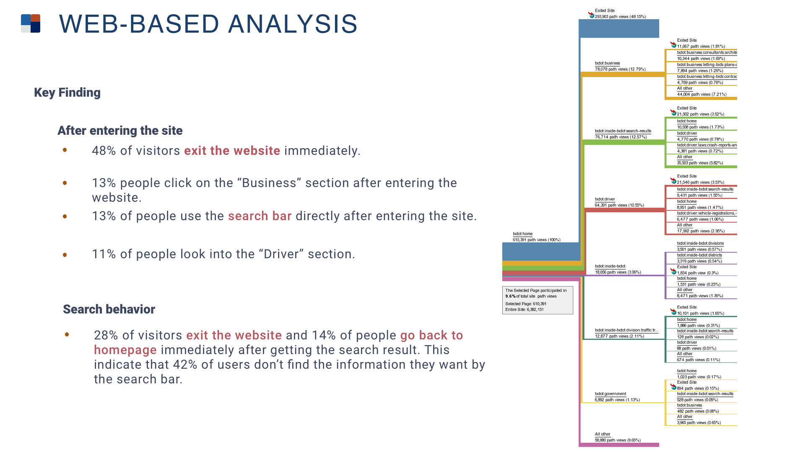
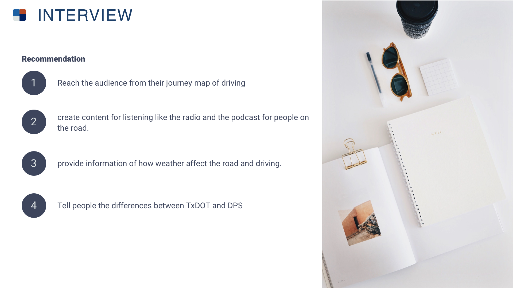

User research on how Texas people consume traffic information and what's the best practice for the Texas Department of Transportation to operate their digital newsroom.
-
My Role
-
Year
2018
-
Research Group
University of Texas at Austin
-
Client
Texas Department of Transportation
Process
Client kick-off
The affinity diagram is a tool used to organize ideas and data. I collected all the high-level questions from the brainstorming after the client kick-off, and categorized them into groups. These are the key questions I will solve in the following research.
Past Research
The past TxDOT website evaluation report has information about the past user groups on the TxDOT website. They are the potential users of the online newsroom. Moreover, the classificational methods can help us screen and recruit people for our other research.
Literature Review
The literature review on how people consume information today give me an insight of the overall consumer behavior on the U.S. Also, I read articles of how to improve brand awareness and how to be a professional newsroom. From this articles, I can find (mostly indirect) competitors and their sucess metrics.
Competitive Analysis
Competitive Analysis is similar to SMEs, but I can know what other corporates are doing right now .

Subjuect Matter Expert
By SMEs, I knew some example of how to run a newsroom. What’s the best practice, what the experts are care about, and how they create content to meet their users’ need.
Web-Based Analysis
Web-based analysis tells me the current usage on the website and what people are talking and feeling about TxDOT on social media. With this information, I might know what people concern the most.

Survey
With the survey, I want to how people search for traffic information and what information they are looking for. More specifically, I want to know how people perceive or react to the brand.
1x1 Interview
interview reveal the reasons and feeling behind the behaviors. I want to know what’s their habit and lifestyle, why they search for the information that ways and how they think about the current tools, and TxDOT.
Usability Test
With the Usability Test, I want to know the current problem with TxDOT website and how to improve it.
Recommendation


Conclusion
In this project, I tried as many research methods as possible. I learned how to define a problem and find the best research method and approaches. Moreover, In the process, I had hands-on practice of screening, interviewing and all the other tools that I think I can carry on to my future projects.